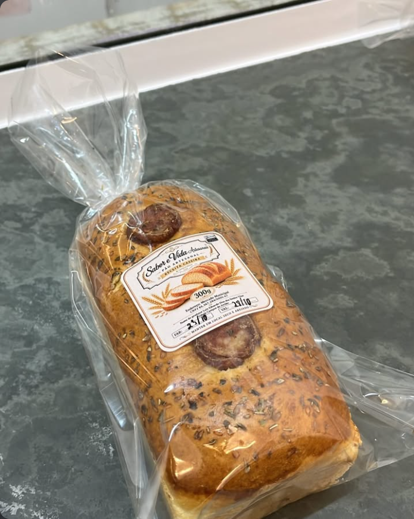
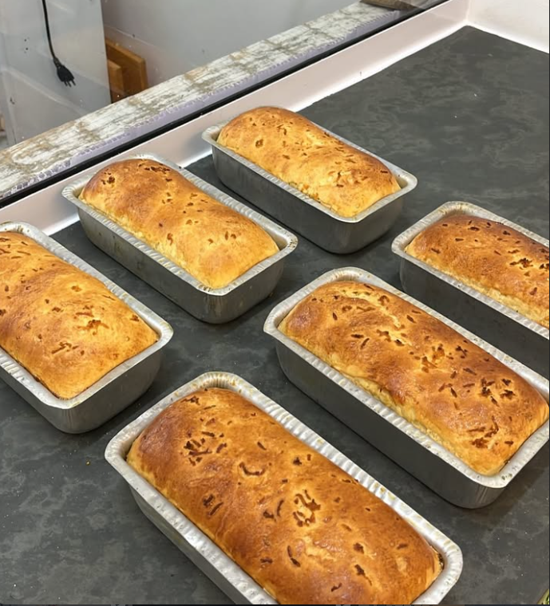
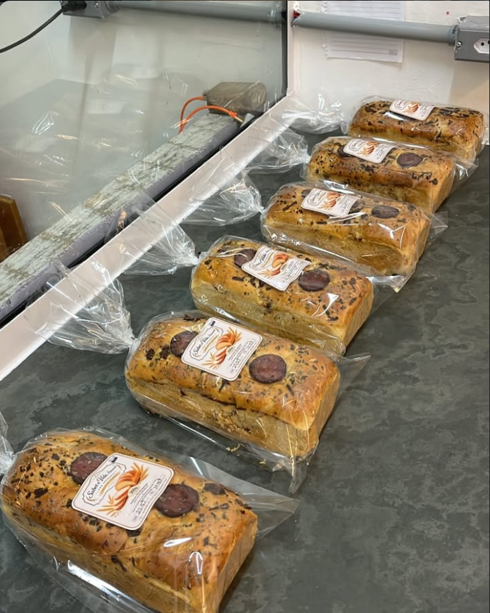
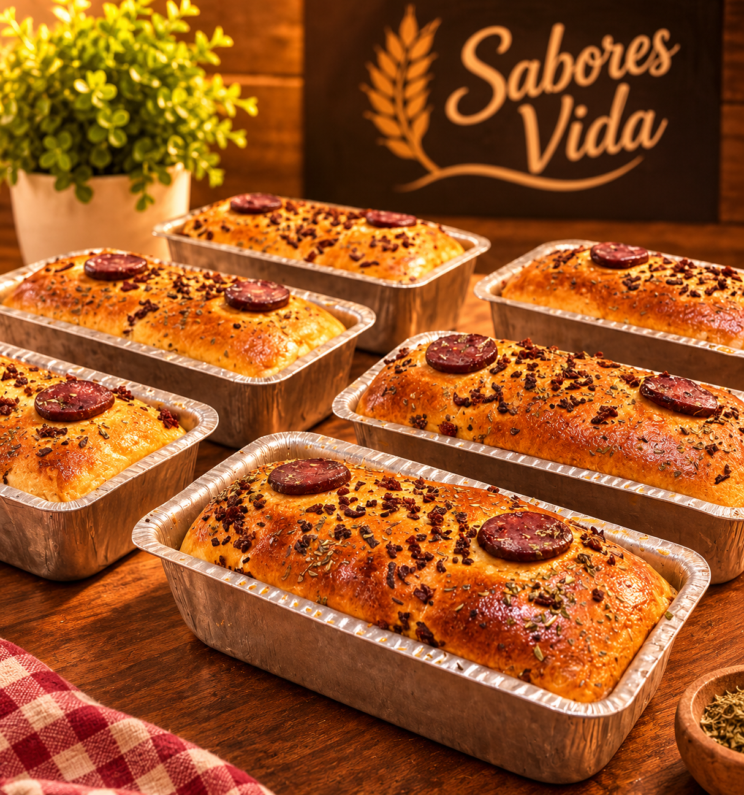
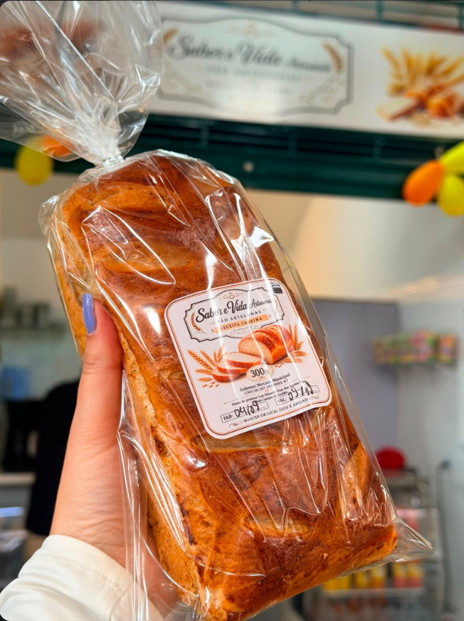
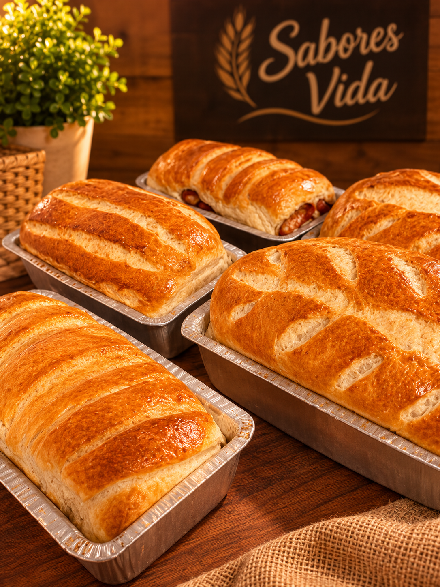
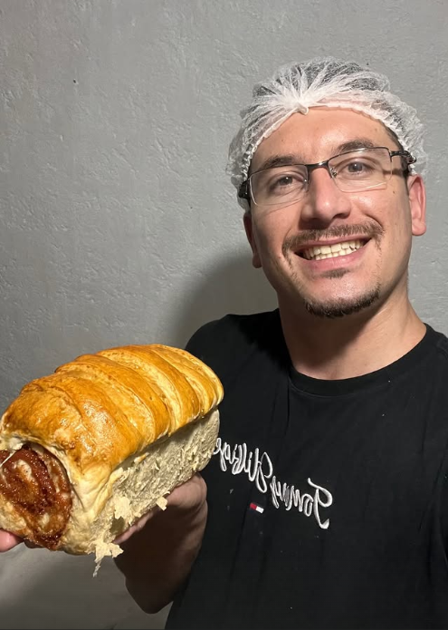

Pães caseiros feitos com fermentação paciente, farinhas selecionadas e receitas de família. Crosta dourada irresistível e miolo que abraça o paladar.
100%
Artesanal & Natural
Fornadas
Diárias & Quentinhas
Campos
Do Jordão • Box 10
Ingredientes selecionados para dar origem a algo verdadeiramente especial.
Cada receita carrega o calor do nosso forno no Mercado Municipal de Campos do Jordão. Descubra os nossos destaques.

A receita clássica da família. Massa leve, miolo aerado e sabor reconfortante perfeito para começar o dia com manteiga da serra.

Carregado com temperos caseiros e recheios suculentos enrolados em camadas de massa macia que desmancha na boca.

Descanso prolongado para realçar aromas e notas amendoadas naturais da farinha. Textura sublime e corte impecável.

Moldado à mão com dobras nobres que criam uma textura única e desfiante a cada pedaço. O favorito das tardes em família.

Inspirado nas manhãs frias de Campos do Jordão, perfeito quentinho saindo do forno com café passado na hora.

Processo de dobras ritmadas que confere uma estrutura de miolo invejável e retenção de sabor inigualável.

Feito com as próprias mãos
Amor e dedicação diária no Mercado Municipal
A Sabor e Vida Artesanais nasceu do desejo de resgatar o sabor autêntico do pão caseiro — aquele que perfuma a casa inteira e reúne a família ao redor da mesa.
Instalados no coração de Campos do Jordão, no Mercado Municipal (Box 10), acordamos cedo todos os dias para sovar, dobrar e assar pães frescos, sem pressa e sem aditivos industriais.
Cada fornada é a celebração do tempo: farinhas puras, fermentação equilibrada e muito carinho para que cada mordida seja uma experiência inesquecível.
Sabor e Vida Artesanais
Campos do Jordão • SP
Atendimento Presencial
Segunda a Sábado • 8h às 18h
Estamos no Box 10, esperando você com o cheirinho inconfundível de pão saindo do forno quentinho.
A Sabor e Vida Artesanais chegou a Campos do Jordão para transformar sua maneira de apreciar um bom pão caseiro.
Localização • Abrir Mapa →
Mercado Municipal
Box 10 • Campos do Jordão
Horário de Fornada
Segunda a Sábado
Das 8h às 18h
WhatsApp Oficial
(12) 99631-9214
Pedidos rápidos e reservas
Compromisso
100% Caseiro
Sem conservantes artificiais
"Obrigado por chegar até aqui. Nos vemos no primeiro pedido."